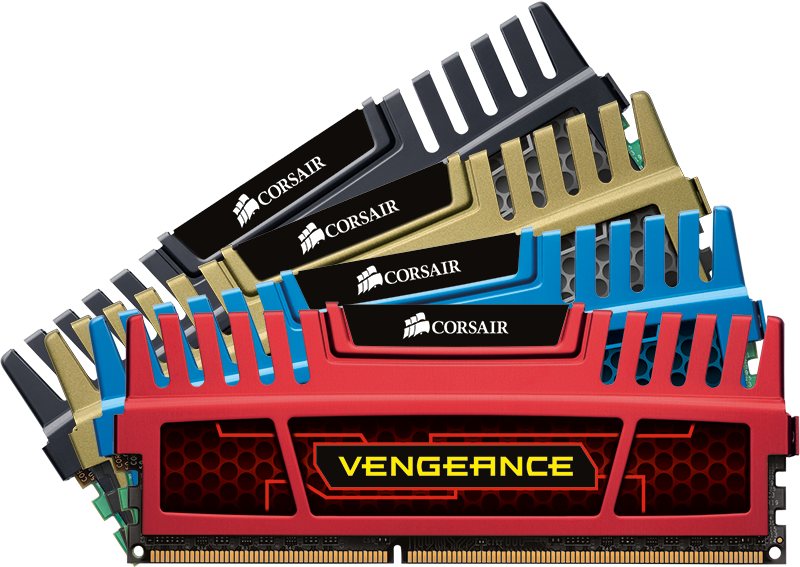
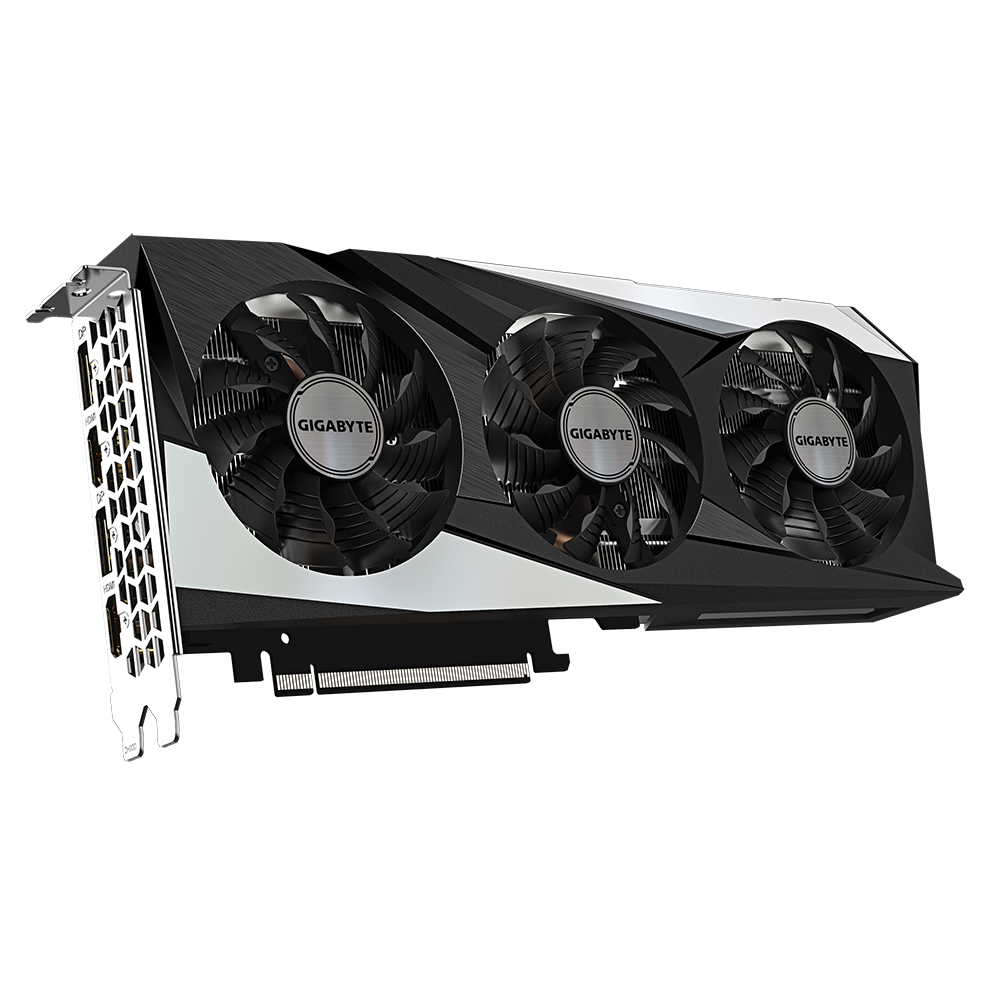
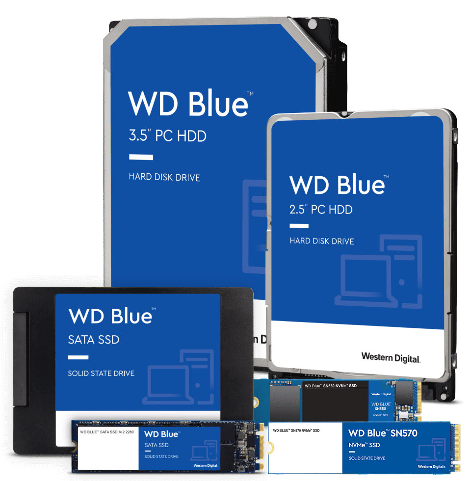

Procesador (CPU):
El procesador es el cerebro del sistema, justamente procesa todo lo que ocurre en la PC y ejecuta todas las acciones que existen. Cuanto más rápido sea el procesador que tiene una computadora, más rápidamente se ejecutarán las órdenes que se le den a la máquina. Este componente es parte del hardware de muchos dispositivos, no solo de tu computadora. El procesador es una pastilla de silicio que va colocada en el socket sobre la placa madre dentro del gabinete de la computadora de escritorio, la diferencia en una portátil es que está directamente soldado. El procesador está cubierto de algo que llamamos encapsulado, y de lo cual existen 3 tipos: PGA, LGA y BGA. El procesador es uno de los componentes de la computadora que más ha evolucionado, dado a que se les exige a los ingenieros que cada vez ofrezcan mejores procesadores para que las computadoras funcionen más rápidas y de forma más eficaz. Su evolución no ha sido solo interna, sino que también su forma externa fue modificada. Los fabricantes de procesadores de PC más populares son Intel y AMD. Este componente es el más importante podríamos decir, y generalmente el más caro, pero sin el resto de los componentes no podría servir ni actuar.
Tarjeta madre (placa base):
Motherboard es la tarjeta de circuito integrado principal del sistema informático, a la que se acoplan los demás componentes que constituyen el computador. Es, por ende, una parte fundamental del mismo y se encuentra dentro de la carcasa del CPU, en donde presenta salidas al exterior que permiten la conexión de distintos periféricos y aditamentos. En la placa base se encuentran además elementos indispensables del sistema, como el microprocesador, la memoria RAM, las ranuras de expansión o el circuito integrado auxiliar (chipset). En su interior, igualmente, se halla instalado el firmware del BIOS, software de sistema que permite regular y probar las funciones elementales del hardware y hace las veces de soporte para la carga del sistema operativo..
Memoria RAM:
la RAM es la memoria operativa del sistema informático. Es el lugar adonde van a ejecutarse y a permanecer activos los diversos programas, desde el propio sistema operativo hasta las aplicaciones que utilicemos. Por eso puede ocurrir que al mantener demasiadas aplicaciones activas simultáneamente, la capacidad de RAM del sistema se agote y ello repercuta en la calidad y la capacidad de cómputo. La memoria RAM se conecta eléctricamente a un dispositivo concentrador de memoria, que gestiona las señales entrantes y salientes de la misma, por lo general consistentes en tres tipos de instrucción: direccionamiento, datos y señales de control.. Tarjeta gráfica (GPU):
La tarjeta gráfica o tarjeta de vídeo de un componente que viene integrado en la placa base del PC o se instala a parte para ampliar sus capacidades. Concretamente, esta tarjeta está dedicada al procesamiento de datos relacionados con el vídeo y las imágenes que se están reproduciendo en el ordenador. Todas las imágenes que ves en el monitor de tu ordenador, desde los gráficos de un videojuego hasta lo que escribes en Word, requieren ser procesadas por el ordenador. Las tarjetas gráficas obtienen esos datos que le envía el procesador del ordenador, y los transforma en información visual, lo que quiere decir que coge datos que son unos y ceros y los convierte en imágenes. Hay dos tipos de tarjetas gráficas, las integradas que van acopladas al propio procesador como una parte de este, y las dedicadas que puedes conectar a parte en el ordenador como si fueran una unidad externa en la que la CPU puede apoyarse para tareas especialmente exigentes. En ambos casos, la gráfica conectará directamente con el monitor para enviarle los datos. Uno de los aspectos por los que las tarjetas gráficas cobran más importancia es por lo exigente que puede ser el procesado de datos visuales en los videojuegos y la edición de vídeo o fotografía. En estos casos, sobre todo en la edición de vídeo de altas resoluciones y la de juegos de última generación, suele tocar recurrir a una tarjeta gráfica externa lo más potente posible. ¿Y por qué? Pues porque las tarjetas gráficas que vienen integradas en los procesadores están pensadas para las tareas más comunes del ordenador, como la navegación por internet o los procesados de imagen más sencillos. Para tareas más pesadas, el procesador necesitará una potencia gráfica, y para ofrecerla y no sobrecargarlo es por lo que se deriva el procesado a las tarjetas externas si las hubiera... AMD Y NVIDIA son las marcas mas reconocidas y competencia. Disco duro (HDD) y unidad de estado sólido (SSD):
HDD y SSD son dispositivos de almacenamiento del ordenador. La unidad de disco duro (HDD, del inglés hard disk drive): es más económico y ofrece mayor capacidad de almacenamiento, pero es relativamente más lento y voluminoso. Unidad de estado sólido (SSD, del inglés de solid state drive): tiene menos capacidad, ocupa menos y es más caro, pero ofrece mayor velocidad.